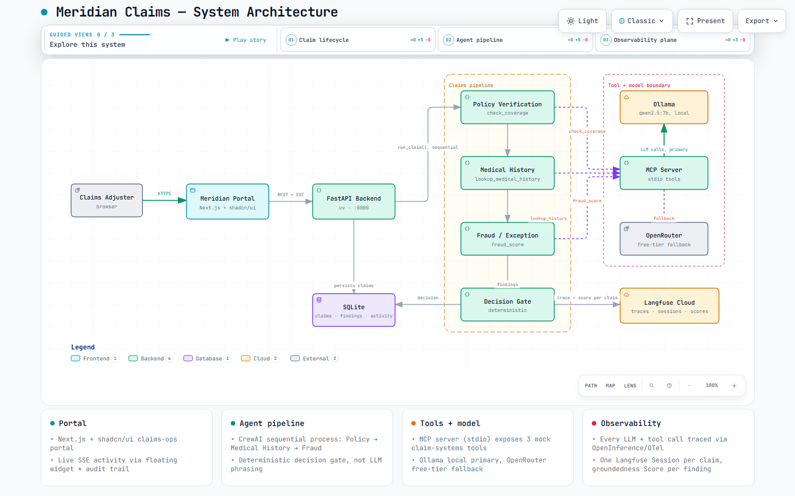

Use Observability — the critical importance of LLM observability in enterprise AI agents
Meridian Claims is a real, running health-insurance claims-adjudication demo — not slides pretending to be a product. Three CrewAI agents check policy coverage, medical history, and fraud signals through MCP tools; a deterministic gate makes the final call; and every LLM call, every tool call, every score is traced live in Langfuse Cloud.

A filed claim moves through three specialist agents in sequence. Each one calls exactly one tool through MCP, and none of them makes the final decision.
Calls check_coverage — is the billed procedure covered, is the
deductible met, are there exclusions.
Calls lookup_medical_history — checks the claim against the
patient's prior diagnoses and procedures for consistency.
Calls fraud_score — billed-vs-typical cost ratio, prior claim
flags.
Combines the three findings with plain code, not model phrasing, and approves, denies, or routes the claim to a human adjuster.
Not just tracing — the parts of Langfuse most demos skip.
All three agents' spans for one claim are grouped into a single Session, so one claim reads as one timeline instead of three disconnected traces.
Every trace carries the patient ID, so you can filter "show me every AI interaction for this person" — the way healthcare actually needs to audit.
An app-managed LLM judge scores whether each agent's finding actually matches what its tool returned, or whether it drifted — recorded as a Langfuse Score.
A seeded claim once approved when it should have gone to human review. The trace showed exactly which signal was missing; one line fixed it, and it's now a permanent eval case.
src/agents.pycheck_coverage, lookup_medical_history, fraud_scoreqwen2.5:7b, local, primary) — OpenRouter free tier as fallback